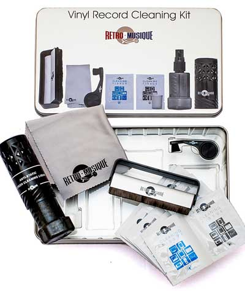
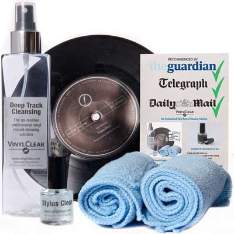
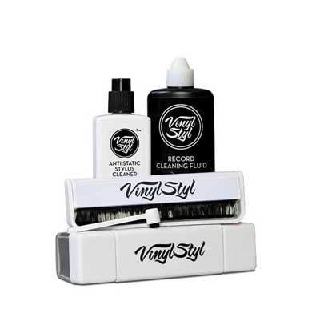
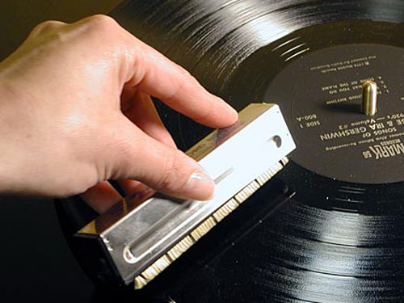

Mantenimiento
Ya han sido algunos seguidores de Discos de Vinilo que nos han preguntado vía mail si podíamos hacer un post sobre cómo limpiar
vinilos con trucos sencillos y fáciles. Bien, pues ya es hora de que compartamos con todos vosotros una serie de pautas y consejos a
la hora de limpiar vuestros queridos y amados discos de vinilo.
Para empezar, es necesario que conozcáis que existen máquinas de limpieza de discos, pero en el caso de que no queráis gastaros
el dinero en una de estas máquinas, no tenéis porqué preocuparos porque con un poco de esfuerzo extra, podemos conseguir resultados
muy similares limpiando los discos de vinilo a mano.
Esto es lo que tendríamos que hacer para poder limpiar nuestros discos de vinilo de una forma sencilla, rápida y sin complicaciones.
Pero lo primero es lo primero, y antes que nada necesitaríamos disponer de una superficie limpia en la que poder colocar nuestro disco.
Preferimos que sea una superficie suave y sin pelusas para poder evitar que se contamine con polvo u otros elementos extraños el disco.
Para ello te recomendamos, que consigas una esterilla de limpieza de discos de vinilo.
Una vez que coloques el disco de una forma segura en una superficie apropiada, podemos comenzar limpiando en húmedo.
Para ello, necesitaremos de dos elementos: una solución de limpieza y dos paños de microfibra (uno para limpiar y el otro para secar).
Pero nosotros en el Blog de Discos de Vinilo, te recomendamos que consigas uno de estos increíbles kits de limpieza de vinilos que
te presentamos a continuación:
KIT DE LIMPIEZA PARA DISCOS DE VINILO RETRO

Un kit de limpieza increíble diseñado para proteger y mejorar tus preciados discos de vinilo y que se caracteriza por
contener una serie de elementos imprescindibles para la limpieza como:
- Cepillo de fibra de carbono antiestática que eliminan la carga estática y elimina las partículas de polvo que pueden acumularse
- Cepillo de limpieza para agujas
- Solución de limpieza profunda en spray
- Paño de microfibra
- Paños de limpieza en seco y mojado
KIT DE LIMPIEZA AVANZADA PARA DISCOS DE VINILO

Un pack que viene con grandes recomendaciones ya que es, nada más y nada menos, que recomendado
por medios de la prensa británica como The Daily Mail, The Guardian y The Telegraph. Contiene los siguientes elementos:
- Frasco grande de 250 ml de líquido de limpieza profesional
- Soporte plegable para secado
- Dos paños de limpieza de microfibra suave y forma cuadrada
- Frasco para limpieza de agujas
VINILO STYL ULTIMATE KIT

Increíble kit de limpieza de discos de vinilo que está formado por los siguientes elementos:
- Lápiz limpiador antiestático
- Cepillo antiestático
- Líquido de limpieza
- Lápiz para cepillo de limpieza

Una vez que ya hemos elegido el kit de limpieza de vinilos que más nos interesa, comenzaríamos el proceso de limpieza paso a paso.
Te lo resumimos a continuación para que puedas limpiar tu disco de vinilo de una forma sencilla y rápida:
1.- Rocía el limpiador entre dos y cuatro veces en la superficie del disco evitando pasar por encima de la etiqueta central.
2.-Usando el primer paño de microfibra, limpia suavemente la superficie con un movimiento circular en el sentido contrario
a las agujas del reloj , siguiendo la senda de las ranuras del vinilo y asegurándote de que el fluido penetra completamente
en las ranuras.
3.-Repite el segundo paso con una solución de enjuague de igual forma.
4.-Seca la superficie de grabación con un paño de microfibra separado con el mismo método, en el sentido contrario a las
agujas del reloj.
5.-Repetir de nuevo hasta que esté el disco limpio.